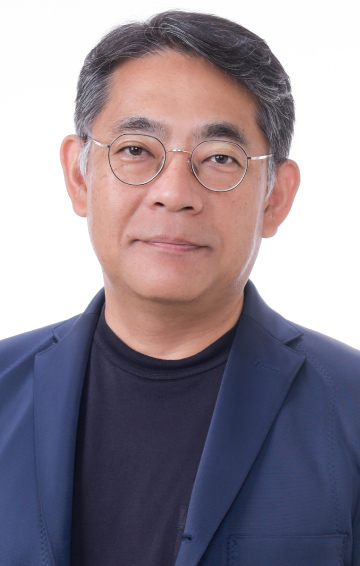

8.25（金）10：55～11：25
クラウドテクノロジーで変える日本の未来ー日本のためのクラウド、お客様のためのAIー
日本オラクル
取締役 執行役 社長
三澤 智光 氏
ビジネス環境が大きく変化する中、企業はこれまで以上に、人・モノ・カネの正確な情報を活用し、その劇的な環境変化に追従していかなければなりません。企業の成長力維持のためにも、どのようにそれら情報を活用すべきか、改めてその真価が問われています。また、生成AIに代表されるようなエンタープライズITの急速な進化を、本当に使える形で業務やシステムにセキュアに取り込み、活用していくことが企業の競争力に大きく影響する時代となりました。それら日本の企業の競争力や未来に貢献するために、Trusted Advisorとして、日本企業の成長を促進するレガシーモダナイゼーションを提案し、エンタープライズAI導入を支援していく取り組みについてご紹介します。